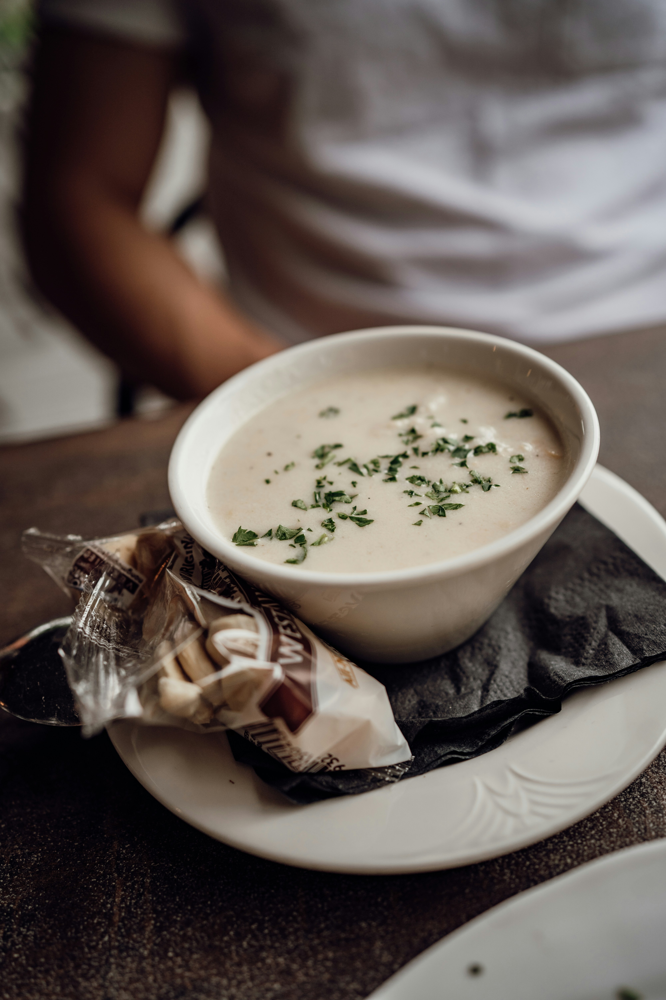

Home
Chowder

Description
This chowder is made following the recipe that my great-Grandmother wrote down when she used to make it for my mom. It is a traditional New England-style chowder.
Ingredients
- 1 pound Clams.
- 1 cup Flower.
- A whole lot of love.
Steps
- Heat a large pot on the stove.
- Add 2 cups water and the flower.
- Once boiling, add clams and other yummy stuff.
- Let simmer for 3 hours and enjoy!